Dr. VIVEK ALLAHBADIA
Precision. Innovation.
Compassion.
28 years of surgical mastery. Trained in the UK. Pioneer of robotic knee surgery in Mumbai. The right treatment — every time.
Years Experience
Knee Surgeries
Patient Satisfaction
Average Star Rating
The two things that define every outcome
Pain‑free
surgery.
Robotic precision means far less soft tissue trauma than traditional surgery. Less damage means less pain — and a recovery that routinely surprises patients with how smooth and quick it is.
24Hours
Walking Within
3Nights*
Minimum Hospital Stay
3–4Weeks
Pain-Free Full Recovery
CORI™
precision.
The world's only handheld robotic knee system. No CT scan. No extra reports. Live 3D mapping during surgery — every cut placed to sub-millimeter accuracy.
0
Pre-op Scans
Required
1st
Robotic System
for Revision TKR
AI
RI.KNEE
Guided Planning
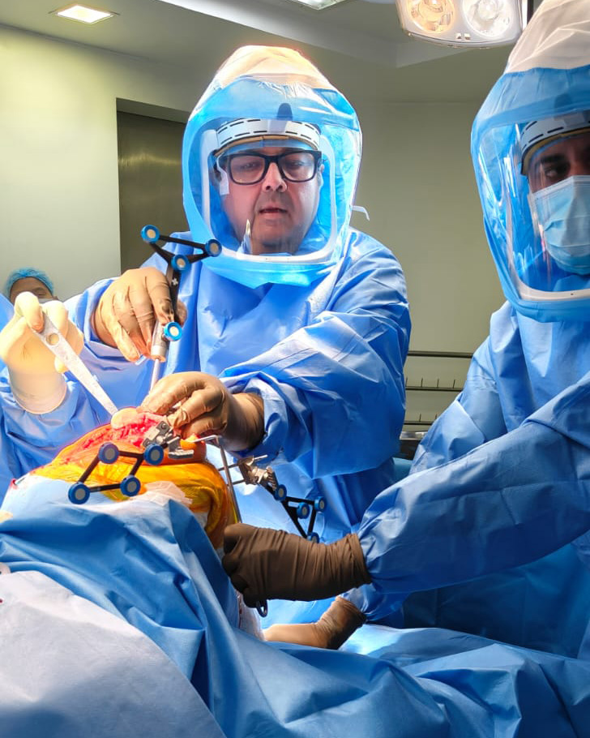
Major conditions,
minor surgeries.
Whatever is happening with your knee — there is a solution. No case is too complex, no condition too far gone.
Total Knee Replacement
Robotic precision for primary arthroplasty — every case personalised to your anatomy.
Partial Knee Replacement
Preserving healthy bone and ligament — when only part of the joint is affected.
Revision Knee Surgery
Correcting failed implants. The CORI is the world's only robotic system cleared for revision surgery.
Trusted by Many
Including some familiar faces.
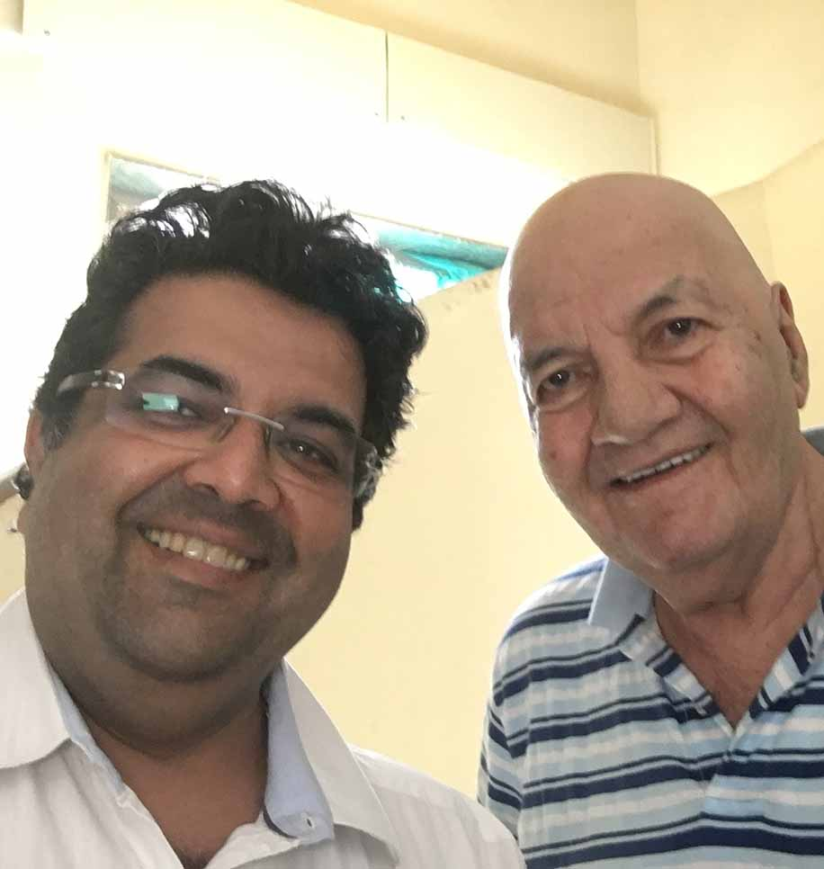
Prem Chopra
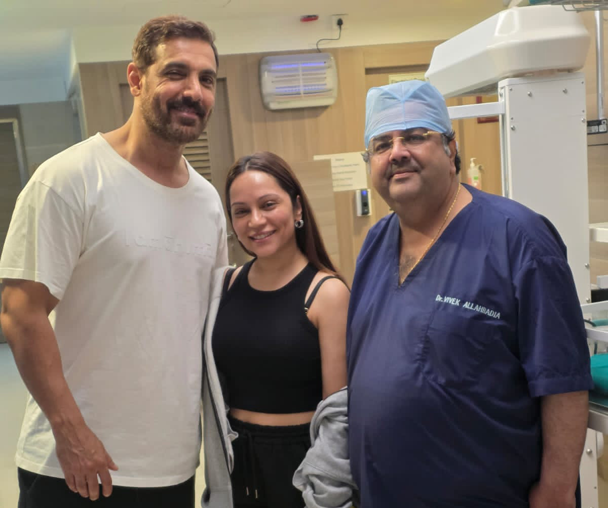
John Abraham
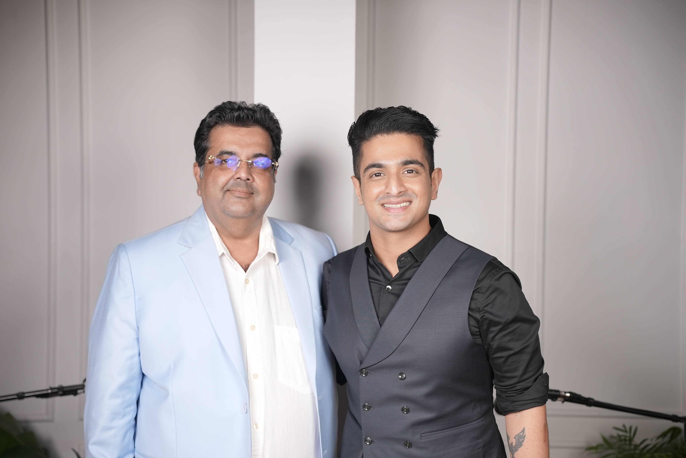
Ranveer Allahbadia
Featured
Understand your pain in detail.
Dr. Allahbadia explains knee pain, its causes, and how modern robotic surgery can eliminate it — in plain language.

"Most patients come to me confused about what's causing their pain. My job starts with making you understand it." — Dr. Vivek Allahbadia
Discuss Your Pain arrow_forwardReal Patients · Real Outcomes
Pain‑Free.
In Their Own Words.
Patient Rating
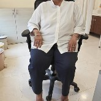
Five weeks after right total knee replacement — back on his feet, back to life. Exactly what recovery should look like.
Right Total Knee Replacement · 5 Weeks Post-Op
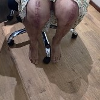
Three months after two cardiac stents, both knees replaced in a single stage. A happy patient — and an even happier surgeon.
Bilateral Single-Stage Knee Replacement · 3 Months Post-Cardiac
Four weeks after bilateral total knee replacement — completely pain-free, full function restored. A recovery that speaks for itself.
Bilateral Total Knee Replacement · 4 Weeks Post-Op
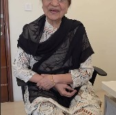
Six weeks after right total knee replacement — leading a completely normal life. No walker. No pain. No limitations.
Right Total Knee Replacement · 6 Weeks Post-Op
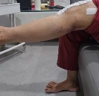
Day 10 after surgery — full quadriceps strength fully regained. Pain-free knee replacement, exactly as promised.
Total Knee Replacement · Day 10
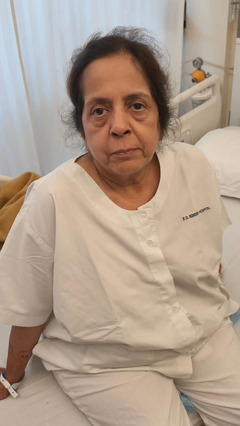
Day 3 after bilateral total knee replacement — completely pain-free from day one. Both knees, one surgery, zero pain.
Bilateral Total Knee Replacement · Day 3 Post-Op
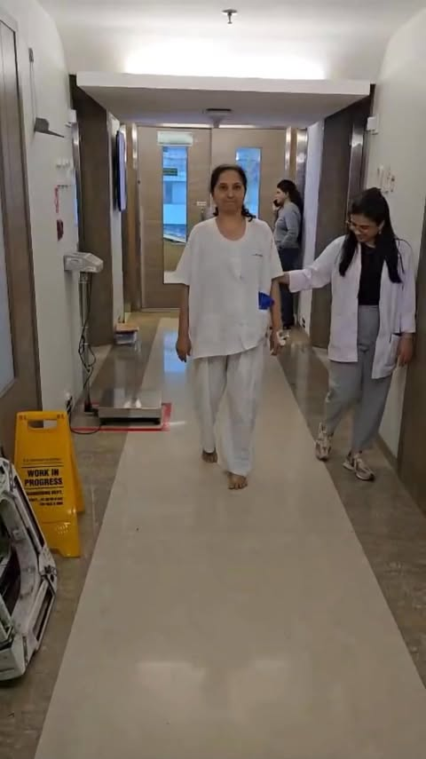
Day 3 after surgery — walking pain-free, unassisted. This is what modern knee replacement recovery looks like.
Total Knee Replacement · Day 3
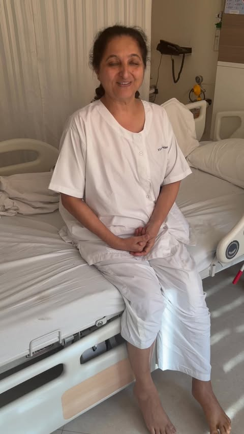
Pain-free total knee replacement — a patient whose life has changed completely. No pain, full mobility, new beginning.
Total Knee Replacement · Pain-Free Recovery
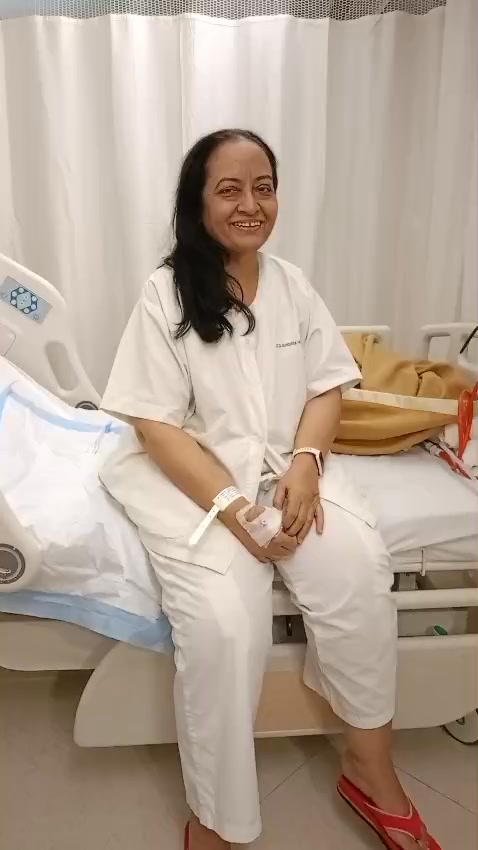
Bilateral knee replacement, pain-free from the very first day. Two knees. One surgery. A complete transformation.
Bilateral Knee Replacement · Pain-Free
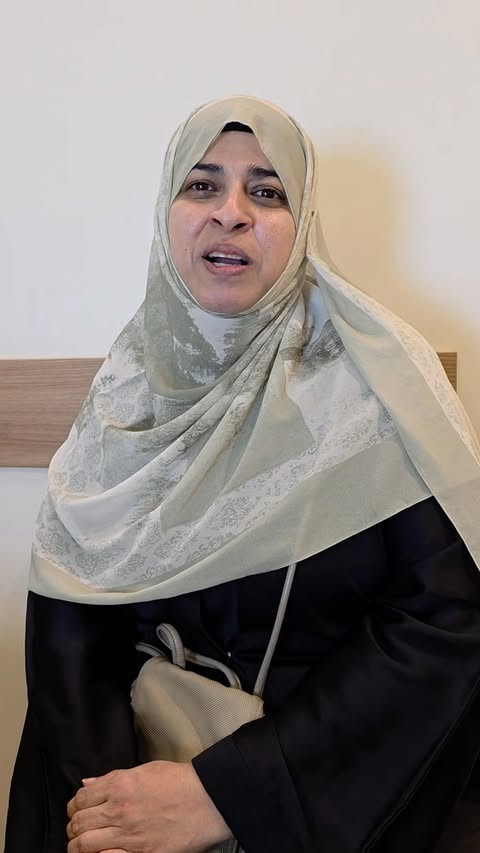
Pain management in knee replacement has never been better — and this patient's recovery is the proof.
Total Knee Replacement · Pain Management
Hover to pause · Click any card to watch on Facebook
Follow on Facebook for More Stories arrow_forwardKnow Before You Decide
Robotic or Traditional —
Which Do You Actually Need?
Robotic assistance makes an experienced doctor better.
It's the experience that counts, not just the robot.
Dr. Allahbadia has performed over 10,000 successful knee surgeries — the overwhelming majority without robotic assistance.
This is not a page selling you on a robot. It is an honest explanation so you can make the right decision for yourself.
These answers come from a place of genuine neutrality. For a personal assessment of which approach suits your case, book a consultation — Dr. Allahbadia reviews each case individually before recommending anything.
Verified Patient Reviews
What patients say
Real reviews sourced from Google, Justdial & HexaHealth
Justdial Reviewer
Verified · Justdial
"Fantastic results, I would strongly recommend Dr Vivek Allahbadia for knee replacement surgery. We were extremely satisfied with the surgery and post surgery care for our mother's bilateral knee replacement. He puts the patient's anxiety to rest by his calm and collected demeanor. Pleasant personality with great surgical skills."
Bilateral Knee Replacement — Mother, Age 70+
Justdial Reviewer
Verified · Justdial
"Dr. Vivek — my mother underwent Total Knee Replacement with your active participation and today, even at 75 and with a few heart-related hospitalisations, she is fit as a horse. Hinduja Khar hospital provided a perfect ambiance for speedy recovery. Thumbs up to the 8th floor nursing staff."
Total Knee Replacement — Patient, Age 75
Akshay Bohra
Verified · Google Maps
"The best doctors are always humble and caring — and that perfectly describes Dr. Vivek Allahbadia and his amazing team. They performed a very complex distal humerus surgery on my father, who is now confidently using his hand again. Dr. Allahbadia has been incredibly genuine and only recommends what's truly necessary."
Akshay Bohra · 6 months ago · Google Maps
HexaHealth Reviewer
Verified · HexaHealth
"Excellent doctor — one of the very few who does not believe in charging high amounts and making money out of his patients. His treatment was very good. Never had an issue after being treated by him."
Orthopaedic Treatment — HexaHealth Verified
Across All Platforms
98%
Patient satisfaction and recommendation rate across Justdial, HexaHealth, and Credihealth.
Had a procedure?
Share your
experience
Help future patients make an informed decision by sharing your experience with Dr. Allahbadia.
Book an Appointment
Consult Dr. Allahbadia
Operates at Hinduja Khar
Strictly by appointment only — no walk-ins
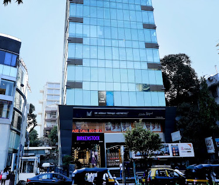
Consultations at VLSR THE CLINIC
Walk-Ins Allowed